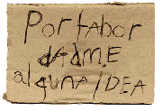

De: La Frikipedia, la enciclopedia extremadamente seria.
De: La Frikipedia, la enciclopedia extremadamente seria. De: La Frikipedia, la enciclopedia extremadamente seria.
|  | ATENCIÓN El autor de este artículo pide una ayudita. Porque es más triste de robar que de pedir. Se le han terminado las ideas y pide de rodillas a los frikipedistas (más listos, inteligentes y guapos que él) que le ayuden a terminar o mejorar su obra. |
Pink Floyd fue una banda de Rock Británica cuyos primeros pasos se dieron dentro del genero del rock psicodélico, pero al darse cuenta de que la gente ya flipaba demasiado con Hendrix en este ámbito decidieron probar con algo nuevo y de esta forma su estilo musical evoluciono posteriormente a Rock Progresivo, Rock Sinfónico etc. etc. Este cambio surgió a raíz de que después del lanzamiento de su primer álbum (The Paper At The Gates Of Down) cayeron en la cuenta de que su principal compositor, que por aquel tiempo era Syd Barrett estaba por así decirlo volviendose loco, por lo cual decidieron que en el momento idóneo lo mandarían a la tienda a comprar leche con sabor a limón, pero ese momento no había llegado aún, así que para mientras llegaba el día, decidieron buscar a un guitarrista "complementario" que realmente seria el sustituto, pero una vez mas no le dijeron nada así fue como durante un paseo por el parque vieron a un vagabundo vendiendo una Fender Stratocaster pues no tenia dinero para comprar sus drogas y decidieron reclutarlo para reemplazar a Barret quien debido al consumo excesivo de LSD insistía en que el elefante Rosa llamado Flopy debía abandonar la banda, así pues el día prometido llego y Roger le encarga a Syd que por favor busque en todas las tiendas del planeta tierra Leche con sabor a limón y que no vuelva hasta que la encuentre, de esta forma Pink Floyd se queda sin Barret (quien se rumora, aun vaga por el mundo buscando leche con sabor a limón).
Pink Floyd surgió en el año 200 d.C. (después de Chuck) a partir de una banda llamada TheBeatlehendrixJaplin, cuando la banda se separo algunos de sus miembros formaron una nueva banda llamada Tea Party, después de un tiempo con Peter Griffin como vocalista principal, se une a la banda el guitarrista y vocalista Syd Barret, lo cual obligo a Waters (antes Guitarrista) a tocar los bajos el bajo. Durante el verano del 201 Bob Klose se da cuenta de que esta en una banda y no en la tienda de la esquina como estuvo creyendo todo el tiempo, así que decide abandonar la banda.
Durante el otoño del mismo año Tea Party coincidió en un concierto con una banda con el mismo nombre que iba a actuar en el mismo lugar, debido a esto Syd Barret (que había estado consumiendo algo de LSD) comienza a decir "Pink, Pink, Pink, Pink (por los colores que observaba)" mientras una madre llamaba a su hijo: "¡Floyd, Floyd, Floyd!" de esta forma Waters sugiere el nombre "The Pink Floyd Sound" agregando un The por que se oía bonito y la palabra Sound que le daba un toque mas "musical", nombre que siguieron utilizando de ahí en adelante, aunque el Sound desapareció con rapidez del nombre el The seguiría presente hasta los trabajos de la banda en 203.
Pink Floyd se convirtió en una de las bandas favoritas del movimiento underground por el hecho de que durante sus presentaciones arrojaban jeringas con heroína y bolsitas con cocaína al publico lo cual les ayudo mucho a cultivar gran popularidad.
en el año 202, después de varias sesiones instrumentales y presentaciones en vivo, Pink Floyd decidió elaborar su primer álbum, The Paper At The Gates Of Down que fue lanzado en agosto del 202 el titulo fue extraído después de que Syd volviera de uno de sus "viajes" ya que no contaban con ningún otro titulo la banda opta por este para el titulo de su primer álbum, el cual les ayudo a cosechar gran popularidad y fama.
A medida que crecía el éxito de la banda, el consumo de drogas (principalmente LS 10 Radio Libertad) tuvo especial impacto en la salud mental de Syd Barret. Su conducta se volvió cada vez mas incoherente lo cual dificultó las presentaciones del grupo en vivo, pues de la nada dejaba de tocar y se ponía a gritar como loco que veía a un elefante rosa llamado Flopy y que este quería comerselo, debido a esto deciden reclutar al vagabundo que estaba vendiendo su Strat conocido como David Gilmour para que reemplace a Barret, a partir de este momento antes de que la banda mandara a Barret a comprar leche con sabor a limón, deciden darle una guitarra de plástico para que el crea que sigue formando parte de la banda, durante un tiempo todo funciono, pero las interrupciones de Barret quien insistía en que Flopy quería devorarlo se hicieron mas frecuentes, entonces el resto de los miembros decide que ha llegado el momento, y pasa lo que todos ya sabemos: le encargan la tarea de partir en busca de leche con sabor a limón y de no volver hasta cumplir su objetivo así, de esta forma el principal compositor de Pink Floyd deja la agrupación en enero del año 203.
Ya con Barrett en la tarea de buscar Leche con sabor a Limón Gilmour, Waters y Wright deciden relajarse con marihuana "medicinal" mientras Nick Mason toma las riendas creativas del grupo, y obliga a sus compañeros a cantar ya que el realmente es mudo y lo único que puede hacer es golpear cosas, utilizando este factor a su favor comienza a golpear a sus compañeros de banda hasta que estos deciden aportar cada uno su propio estilo en las nuevas producciones, y así Nace "A Sausagefull Of Cheese" que consiste en su mayoría en los sonidos de Mason golpeando a sus compañeros, efectos sonoros, percusiones y demás cosas que tienen que ver con ruidos, por lo cual alcanzo el noveno lugar en el Reino Unido y se convirtió en el único trabajo de de Pink Floyd que no entro en las listas de Yankilandia, debido a la salida de Barret, el álbum aun contenía mucho del sonido Psicodélico que este aporto a la banda, tal sonido alcanzaría su punto máximo en el álbum "Yabadabadoo" pero el disco no obtuvo el impacto que los miembros deseaban y al contrario lo único que generaron con este trabajo fue una demanda multimillonaria por parte de Pedro Picapiedra quien acusaba a Pink Floyd de plagiar su frase (o palabra) característica. Poco después fueron llamados por el director Barber Schnauzer para que estos se hicieran cargo de su película Moar, que se estrenaría en mayo del 204, luego debido a que no querían grabar material nuevo las composiciones se editaron como un álbum de estudio: Music From The Film Moar. El siguiente trabajo de la banda fue un album doble, el famoso Yabadabadoo pero ya sabemos esta historia.
Atom Heart Motherfucker, fue el siguiente álbum de estudio de Pink Floyd y la primera grabación con una orquesta el nombre fue una decisión de Nick Mason quien había leído en el diario una noticia acerca de un hombre con un marcapasos atómico implantado que había matado a 30 gatitos. En la portada del disco se pude apreciar a la mascota de la banda, una vaca llamada Lullabelle III.
Durante esta época de la banda, deciden grabar una sesión en directo desde Pompeya, la cuál contó con imágenes del lugar muy emocionantes, una iluminación que proporcionó el mismísimo MonEsVol pero que nunca se supo porqué no hubo público alguno en esta grabación, al parecer, Monty Burns obligo a Pink Floyd a tocar únicamente para él.
Durante esa sobre producción de ácidos Nick Masón decide subir a Yahoo, el album Malcolm in the Meddle, donde golpearía a sus compañeros si no creaban una canción que durara veintitres minutos y medio, en una hora, Para la imagen del disco se pidio que Sasha Grey se le tomara una imagen a su ano, pero que no que a la mera hora no y que fuera su oreja bajo al agua.
En el año 208 Lanzarían la película; Transformers The Dark Side of the Moon, Gracias a su guía espiritual Nick el Mudo masón que también era Illuminatí ,mando a poner una pirámide como emblema, y un Ojo con un vectorial Arcoíris bien hermosa, finalmente el disco trataba sobre el errante Syd Barrett que en un momento estuvo apunto de encontrar la leche con limón en una tienda, que al comprarla descubrió que no era de limón, era de lima, y desilusionado siguió con su búsqueda.
corría el año 210, el guía espiritual Nick el mudo mason, quiso sacar otro nuevo álbum,así que pateó con muchas fuerzas a los inútiles y por el momento débil resto de la banda a que crearan un nuevo álbum inspirado en su loco amigo Syd Barrett y su ardua búsqueda de la leche sabor limón,esta idea le fue muy buena a Roger waters así que decidió crear una canción llamada "Oh Brilla Mi Diamante Patricio Estrella", aunque la letra era un poco mala ya que se habían preparado un sándwich que tenía olor a muerto. después de mucho tiempo, un loco syd barrett un poco regordete logró encontrar la mítica leche sabor limón, aunque ya habían represalias a causa de la inmensa búsqueda, había quedado un poco gordito ya que se alimentaba de chuletas de cerdo entre otra porquería que se le atravesaba en su larga búsqueda, logro el estado calvo mas perfecto gracias a un ligero entrenamiento que experimentó, cuando ya tenía la leche en mano, decidió regresar al estudio para seguir con la banda, al llegar, la canción "Oh Brilla Mi Diamante patricio estrella", aun estaba en estado de creación, los chicos al ver que Syd Regresó, todos quedaron sumamente sorprendidos, había encontrado la mítica leche sabor a limón, Roger Waters Sacó rápidamente a Syd y le había encomendado una nueva tarea, la tarea era que debía de encontrar un cerdo volando, Syd armado de valor, preparó sus Chuletas de cerdo y fue a su nueva tarea.
 Rock & Roll Rock & Roll 
| ||
|---|---|---|
|
Bandas
Personajes
Variado
|
Autor(es):